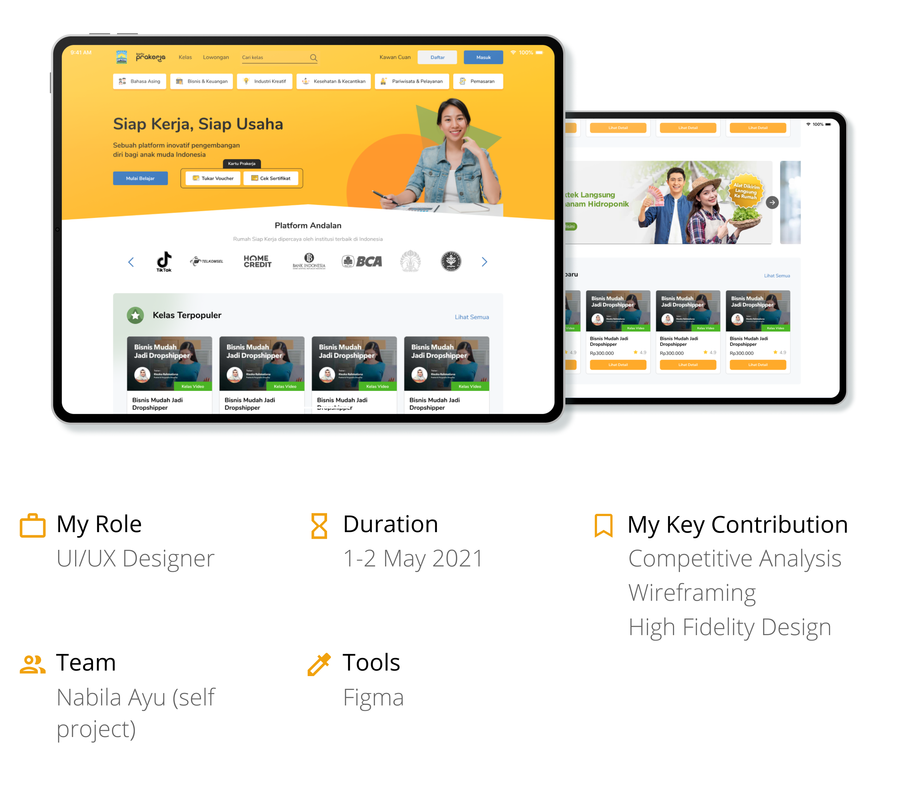
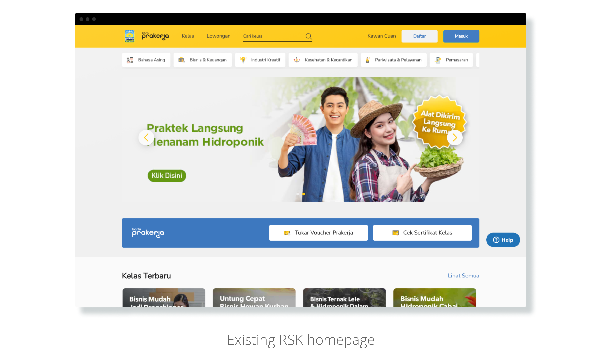
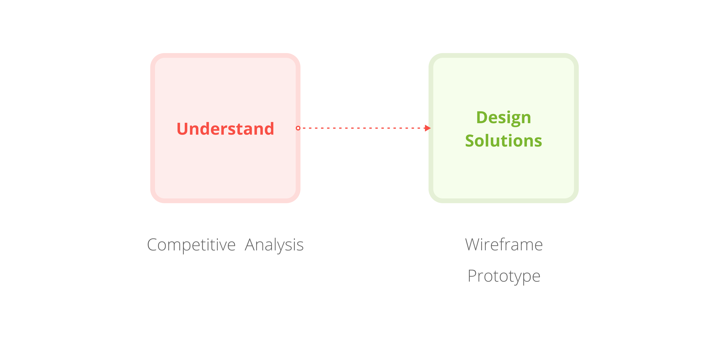

Rumah Siap Kerja

Background
This was a personal project I've done as a challenge to improve a website's user experience. Rumah Siap Kerja (RSK) stands out to me because of its lack of friendliness to new users. At the existing homepage, users aren't greeted with any kind of introduction. This could have a negative impact if RSK is looking to build its user base.
How can I improve RSK's homepage so that new users will likely be more interested?
Design Process
The process itself didn't include an evaluation because my main objective in this challenge is to exercise my design skills.
Competitive Analysis
In this step, I did a mini analysis by reviewing a couple of popular websites within the same industry with similar target users; job seekers. The following insights was what I gathered:Lack of Originality
The core elements of RSK’s homepage above the fold (category tab, banner, Prakerja section) and their placement looks almost the same as Ruangguru’s Skill Academy. Which brings originality into question.
Idea: Redesign home page above the fold structure.
Missing Social proof
RSK also missed the chance to show social proof front and center when social navigation is proven to be effective in drawing user’s attention[1]. This could be a trigger for them to scroll further.
Idea: Move partners section to the top of home page
As 'above the fold' is where users would make up their first impression, its is essential to optimize the space in order to make that impression a good one. Here, RSK has the potential to maximize their branding to create a memorable yet unique experience for their end-users.
Wireframing & Prototyping
After doing a competitive analysis and ideating, I come up with a change of layout as a possible solution. This is the result of the consideration to build an effective ‘above the fold’ by putting title, subtitle, call to action, hero image, and social proof at the top of the page. While also still providing confirmation of social proof at the end of the scrolling experience with testimonies.RSK’s website used to assume that users already know who they are and that users would trust their products from the first glance.
- Optimized above the fold: All of the key aspects are visible from the first time a user load the website, without having to scroll down.
-
Diverse viewing experience: Instead of the monotonic view of just cards, we break their attention with
a carousel.
- I realised putting the carousel further below defeats the purpose of putting it at the very top in the first place. That’s why adding an info popup might also be a possible solution.
- Breaking user’s concentration is proven to positively affect their goal-directed search process[2].
Reference
[1] Farzan, R., & Brusilovsky, P. (2019). Following others through an information maze: The impact of social navigation on information seeking behavior. International Journal of Human-Computer Studies, 124, 81–92. https://doi.org/10.1016/j.ijhcs.2018.11.001
[2] Ozkara, B. Y., Ozmen, M., & Kim, J. W. (2016). Exploring the relationship between information satisfaction and flow in the context of consumers’ online search. Computers in Human Behavior, 63, 844–859. https://doi.org/10.1016/j.chb.2016.06.038